Motto: Společnými silami

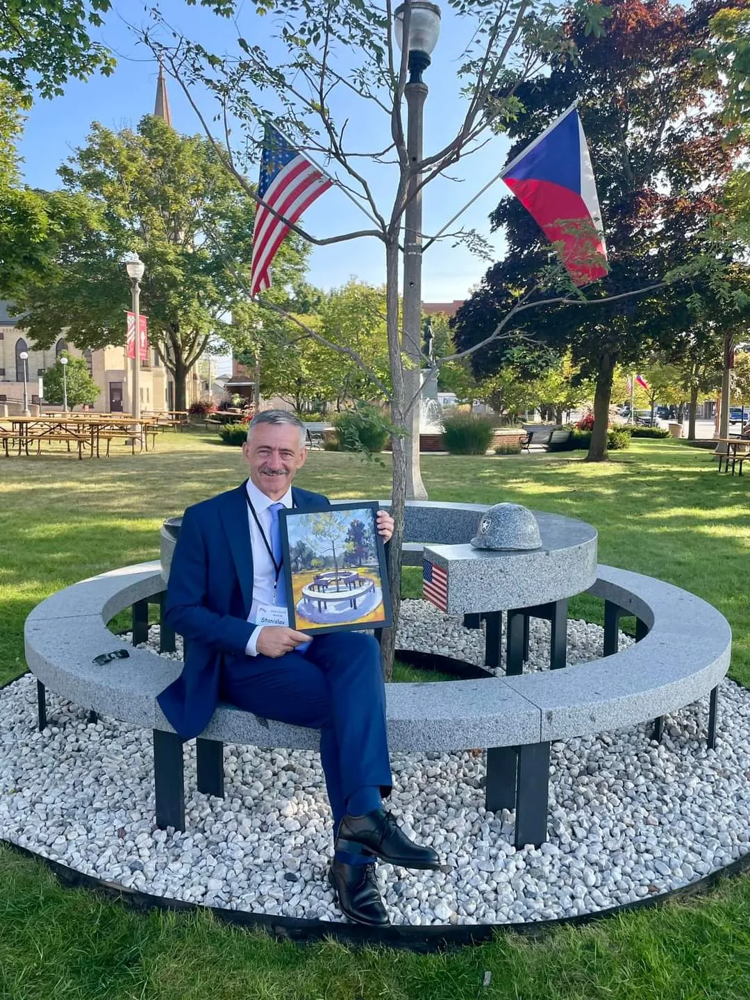
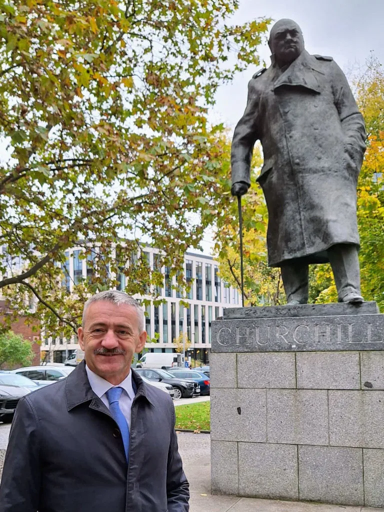
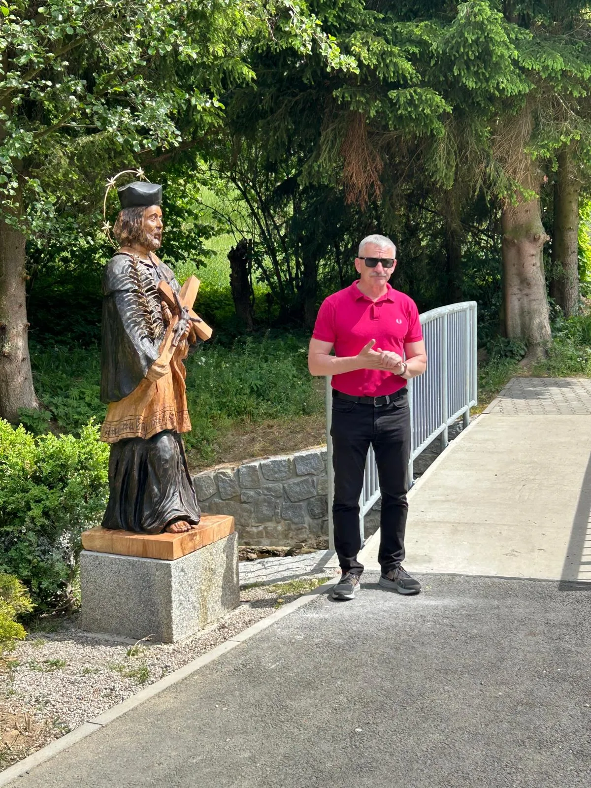
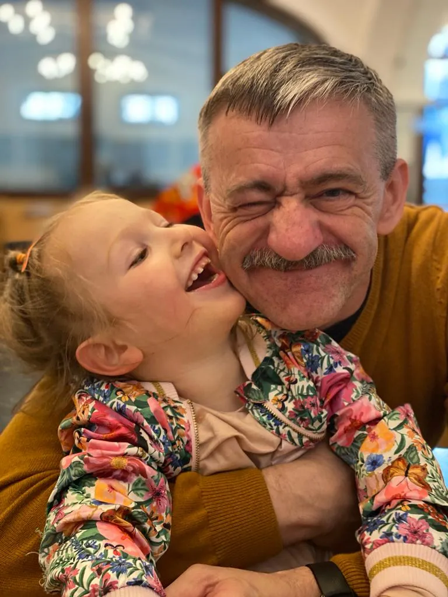
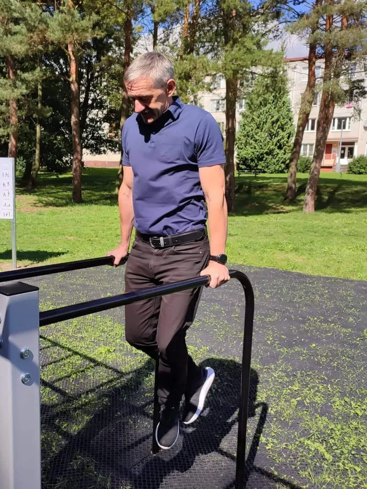
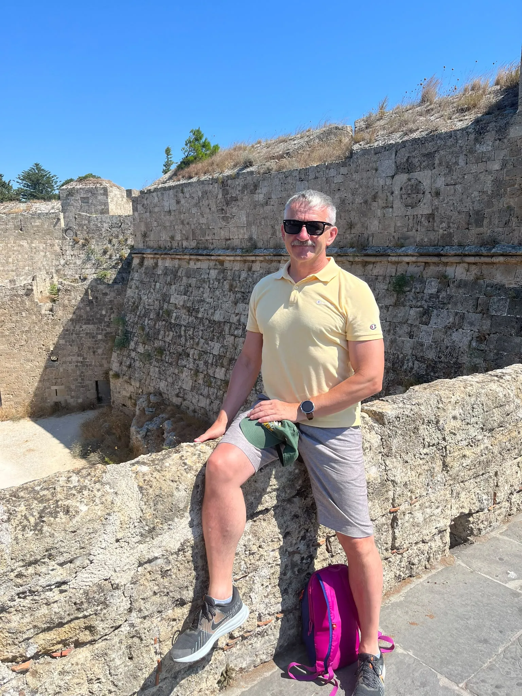
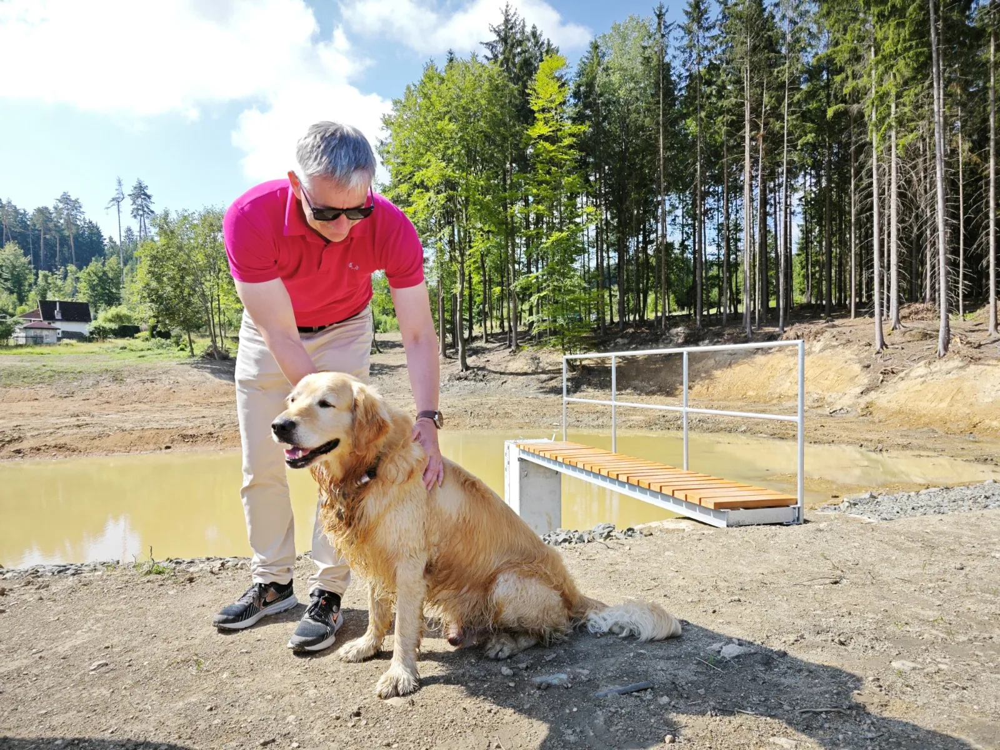
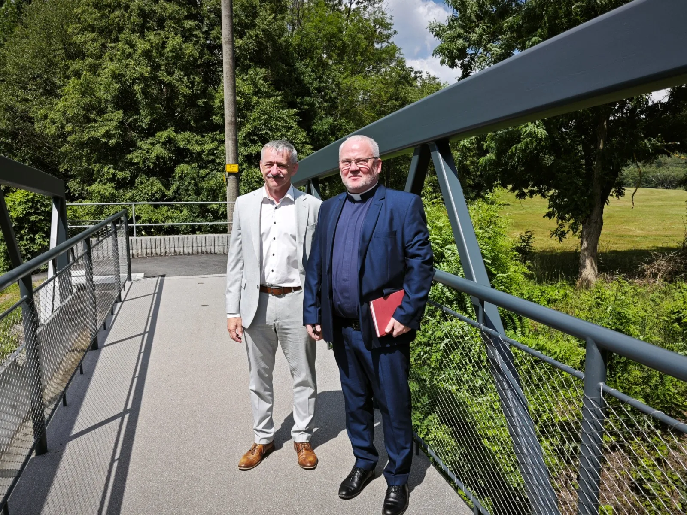
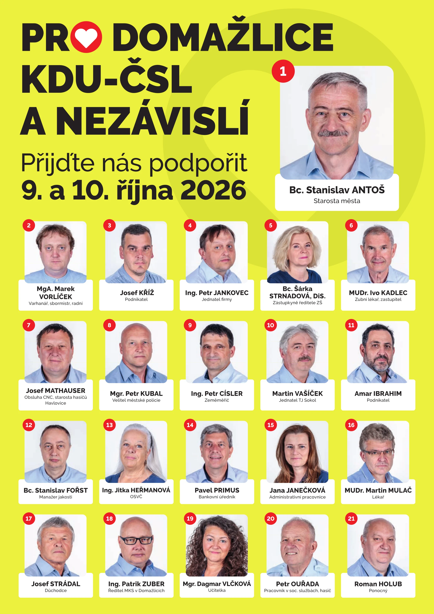
Hnacím motorem každého člověka je, že není nikdy spokojen. Ani já si nemyslím, že jsem v profesní dráze vždy vše dělal dobře. Ale přesto, když se ohlédnu, myslím, že práce – kterou jsme měl tu čest vykonávat s kolegyněmi a kolegy jichž si vážím – je za námi kus práce. Do budoucna na to chci navazovat s týmem, který vzejde z podzimních voleb. Je třeba na základě vypracovaných projektových dokumentací v končícím volebním období ve výstavbě bytů. V režii města i spolu s developerskými společnostmi.
Doplnit síť sportovišť v našem roce. To není jen dokončit skatepark, tréninkové hřiště pro fotbalovou mládež, multifunkční hřiště pro sport i pro malé děti, ale hlavně postavit novou sportovní halu na Střelnici i novou klubovnu pro tenisový klub.
Důležité je pokračovat v rekonstrukci komunikací a připravit se na návazné stavební akce, které vyvolá blížící se investice Správy železnic na vlakovém nádraží. V dopravě je třeba vyhledávat nová místa na parkoviště. Je to opravdu hodně a toto je jen několik málo nápadů, které s kolegy připravujeme k realizaci.
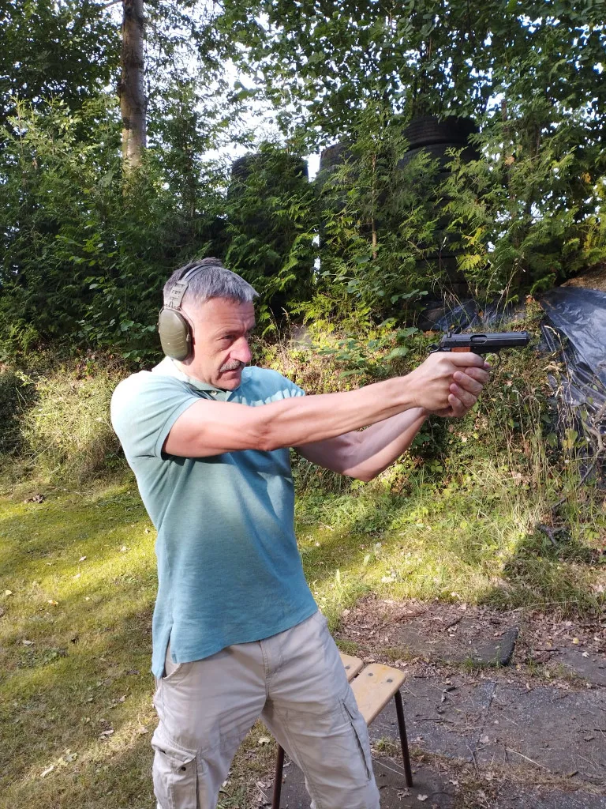
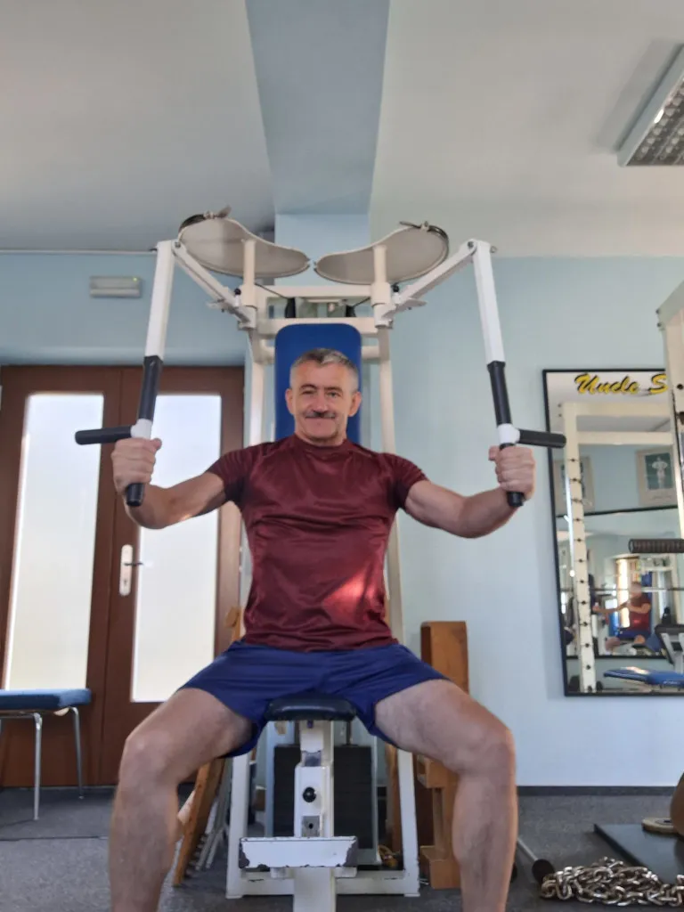
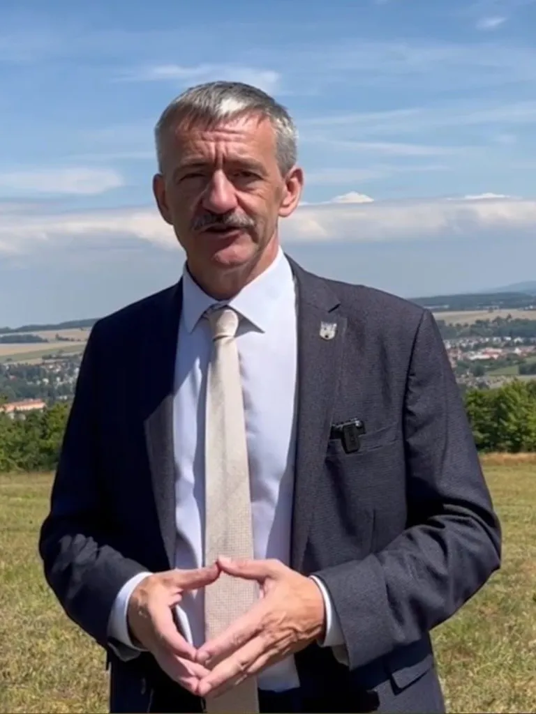
Máte něco, co vás v Domažlicích trápí? Napište mi.
Ne vždycky dokážu slíbit rychlé řešení. Ale garantuji, že se na to podívám, zjistím, kudy vede cesta, a ozvu se.
Někdy stačí jedna zpráva, aby se věc začala hýbat.
A někdy taky zjistíme, že stejnou věc neřeší jen jeden člověk, ale celá ulice, čtvrť nebo rodiče, kteří se potkávají ráno před školkou.
Proto má smysl se ozvat.

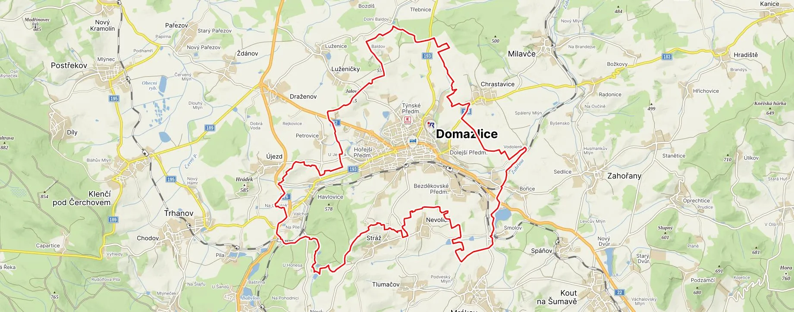